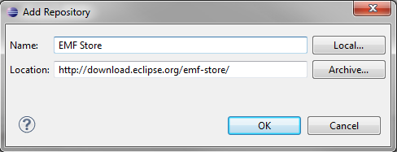
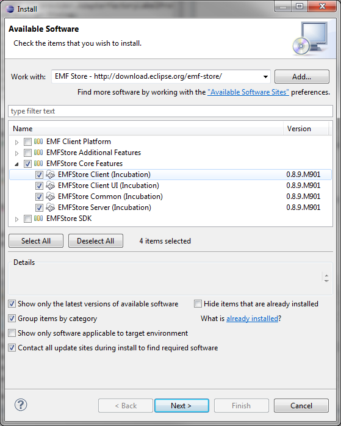
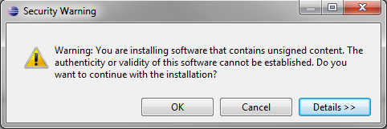
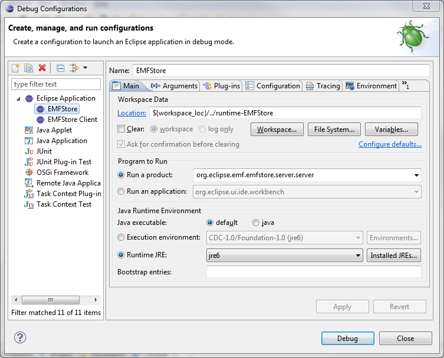
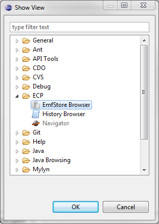
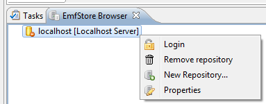
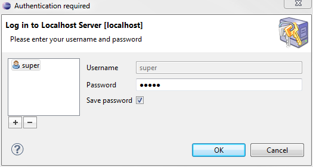
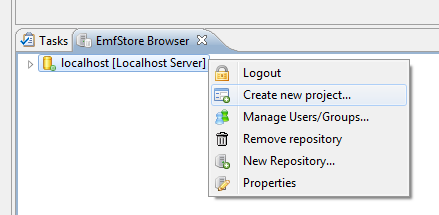
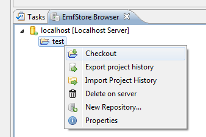

Follow the steps below to install the EMF Store.
Step 1: Get EclipseTo install the EMF Client Platform, you need a running Eclipse. The easiest way to get started is to use the latest modeling edition.
Step 2: Installation using the update siteIn Eclipse, go to "Help >> Install New Software..." and add the EMF Store update site by clicking on the Add... button in the upper right corner. Enter an arbitrary name and get the URL from our downloads page.

Select all packages under EMFStore Core Features for installation.

Proceed in the installation wizard by repeatedly clicking Next until the installation starts. Midway through, you will get a warning message. Click OK to proceed.
When the installation has finished you are required to restart Eclipse. At this point, the EMF Store is already fully installed into your Eclipse environment. Step 3: Importing the Example ModelIn order to see the EMF Store in action, it is necessary to have a model to work with. If you already have your own model, you can skip this step. Otherwise, you can download this example model and add it to your workspace by importing it from the filesystem.
Step 4: Running the EMF StoreNow you can start the EMF Store by running a default Eclipse Application in the debug configurations.

In order to test the EMF Store, you need to run the EMF Client Platform (ECP), as described under Step 4 in the ECP documentation.
In the new ECP runtime instance, add a new View by navigating to "Window >> Show View >> Other...", then select the view EmfStore Browser in the folder ECP.
You need to login in the EmfStore Browser view, using "right click on localhost [Localhost Server]>> Login" and then typing in the default password "super".


Now, you can create a new project by using "right click on localhost [Localhost Server]>> Create new project...".

Finally you can checkout the new project from the server using "right click >> Checkout".